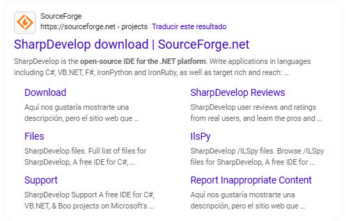
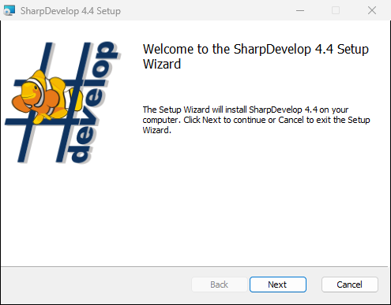
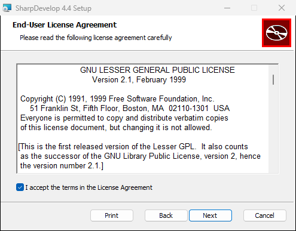
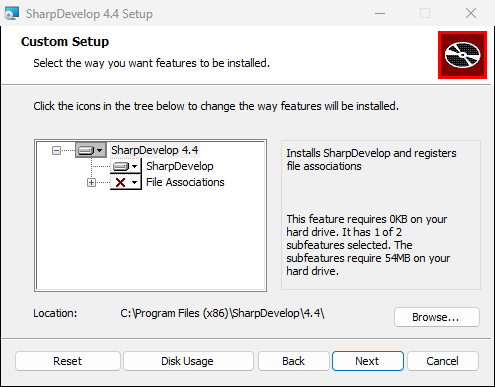
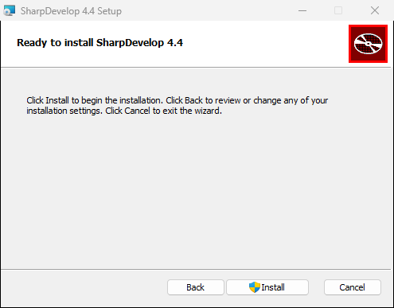
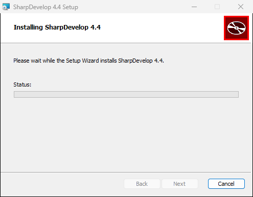
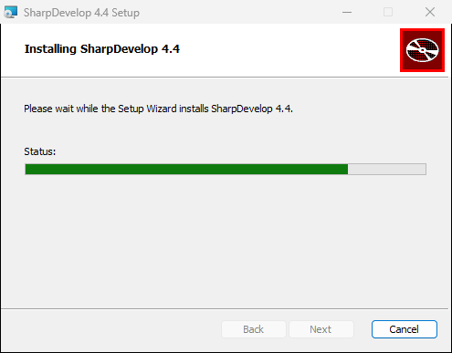
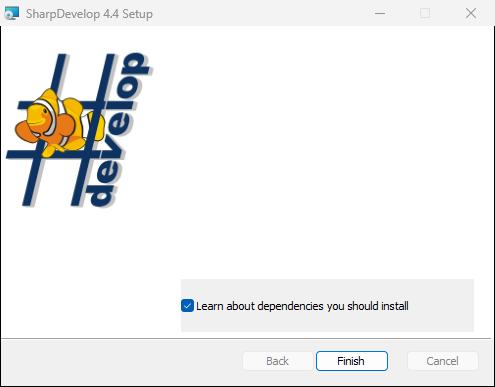
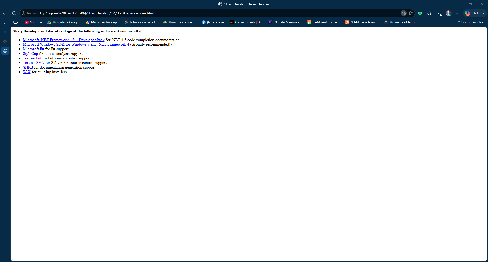
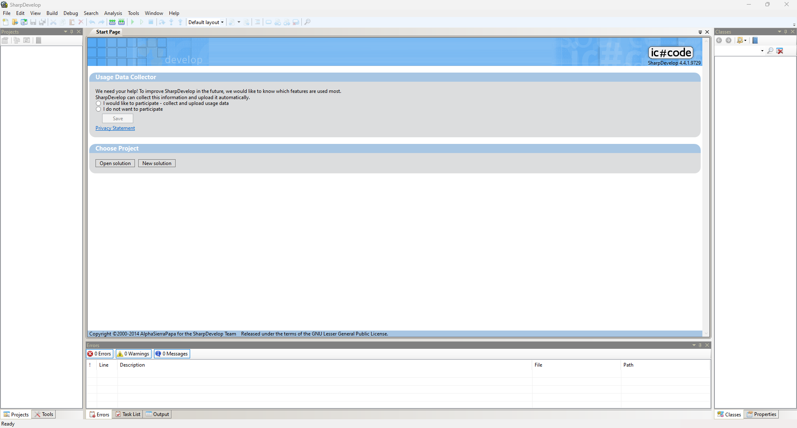

SharpDevelop
Link SharpDevelop download |
SourceForge.net 
SharpDevelop es el IDE de código abierto para la plataforma .NET. Escribe aplicaciones en lenguajes como C#, VB.NET, F#, IronPython e IronRuby, así como en Rich y Reach Target Rich: Windows Forms o WPF, así como ASP.NET MVC y WCF. Empieza desde unidades USB, soporta proyectos de solo lectura, incluye herramientas integradas de pruebas unitarias y de rendimiento, Git, NuGet y muchas más funciones que te hacen productivo como desarrollador
Ultima Version
4.4.19729
Fecha 2026-04-14
Pros:
Contras:
Proceso de Instalación








